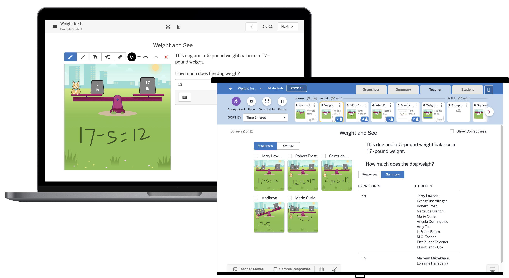
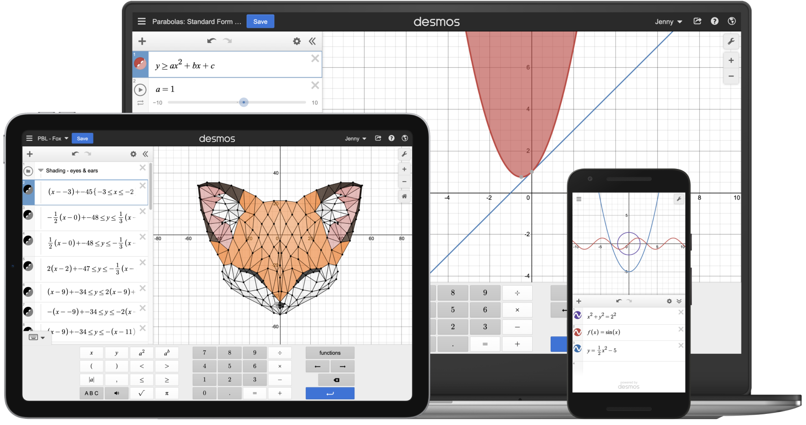
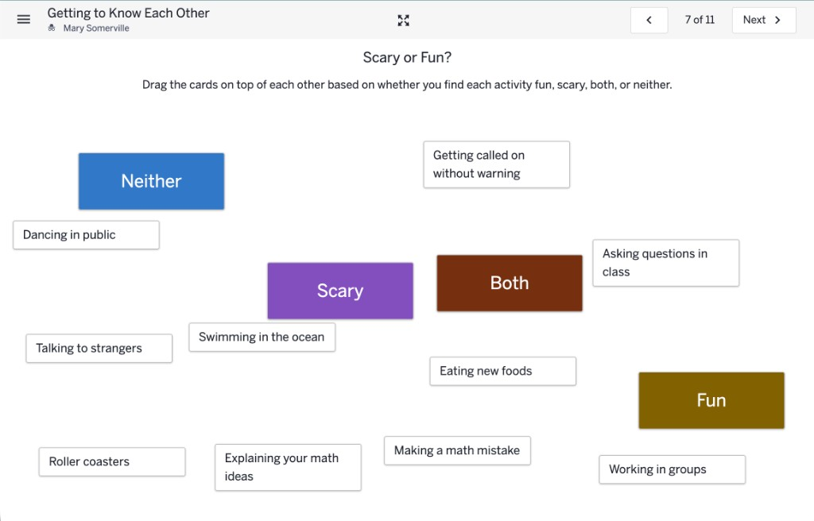

Hi there. I'm Jenny Brooks.
I am a product design leader with 13 years of experience ranging from solo designer at a startup to leading design teams at larger organizations. I love creating powerful, flexible, and delightful user and team experiences and learning new things.

Now: leading the platform design team at Amplify.
We build a platform that supports students in seeing their ideas come to life as they learn and collaborate with their peers, teachers in becoming more confident and supported in their craft, and curriculum teams in creating best-in-class classroom experiences.

Previously: 10 years leading design at Desmos, which joined Amplify in 2022.
We started as a small team working on a free online graphing calculator. Working closely with math teachers, we built a few custom digital lessons as we explored ways to use technology to create powerful learning experiences. That led us to build a free tool to create classroom activities, Activity Builder, which we used to create a middle school math curriculum that centers student thinking. The curriculum received perfect scores from EdReports and improved student learning outcomes.
Selected Work

Bringing AI prototyping to the platform team
How product managers and designers started using Cursor and what we learned along the way.

Making math accessible
Making the Desmos calculator work for blind and low-vision students with Nemeth Braille support.

Digital Card Sorts
Creating a digital version of a physical classroom activity.